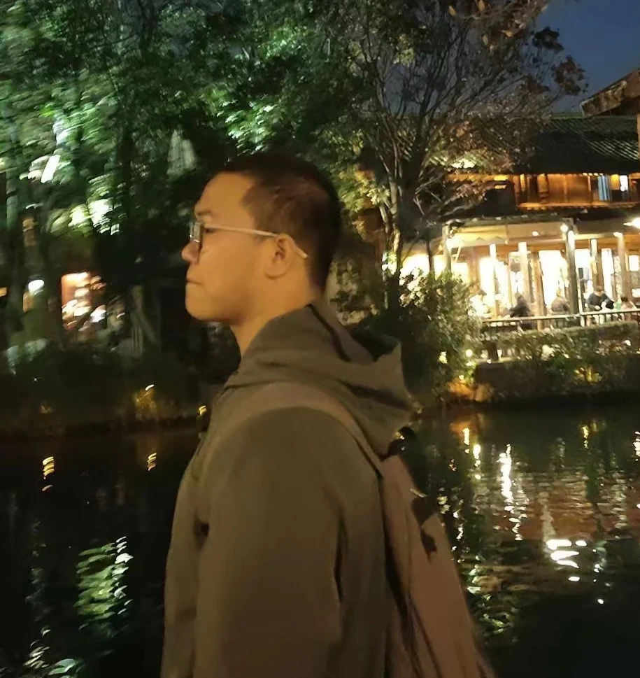

A LITTLE CURIOSITY. A LOT OF POSSIBILITY.
Hello, I’m
Chuangqi Lee.
Graduate student · Utrecht University
Exploring intelligent systems.
Staying curious about life.
My current research focuses on human–computer interaction, AI for Medical, and Biomedical Engineering. I am interested in connecting intelligent algorithms with human needs to support health, well-being, and meaningful interaction.

01 / PERSONAL NOTESResearch with purpose.
Live with curiosity.
ABOUT ME
A little more about me.
People, intelligent systems, and health.
I’m Chuangqi Lee, a graduate student in Computer Science at Utrecht University, where I began my graduate studies in September 2026. My current interests lie at the intersection of human–computer interaction, AI for Medical, and Biomedical Engineering. I want to explore how intelligent systems can be designed around people and contribute to health and well-being.
My previous research has involved multimodal learning engagement assessment, body-based interaction, language-model agents, and visual perception. These projects have shaped my interest in combining algorithm development with interaction design and evaluation in real-world settings.
Alongside my research, I am the founder of Beijing QiChuang Era Technology Co., Ltd. and lead the Neuroboost project. I work on product definition, overall project development, and resource coordination, exploring how medical AI can be brought into practical software and hardware products.
Beyond research, I enjoy sports, reading, chess, travel, music, and discovering good food. My experience in student organizations and volunteering has also strengthened my appreciation for communication, teamwork, and learning from others.
I welcome research conversations and collaborations in human–computer interaction, medical AI, and biomedical engineering. Feel free to get in touch by email.
cq.l@outlook.com ↗EXPLORE
Take a closer look.
Each section has its own page.
News
Research updates and milestones.
Research
Projects, methods, and research practice.
Publications
Papers, preprints, and publication records.
Experience
Research experience, education, and my CV.
Company
Qichuang Era and the Neuroboost product portfolio.
Life
Personal interests, photographs, and writing.
Contact
Research conversations and collaboration.